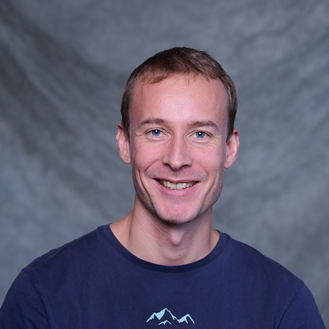

Lucas Amoudruz
Lucas Amoudruz
Research Associate & Lecturer
Harvard University, CSE Lab
Email: amlucas@seas.harvard.edu
Scholar: Lucas Amoudruz
ORCID: 0000-0002-2688-5949
Github: amlucas
Full CV (PDF): Last updated April 2026

Most of the systems I study only show part of themselves. We can't watch individual blood cells flowing through capillaries. We can't see all cancer cells around tumors. We can't predict the effect of unresolved scales in turbulent flows. My work is often about inference: using large-scale simulations, probabilistic methods, and machine learning to reconstruct what can't be seen directly, whether that's a hidden state, a past event, or what comes next. Sometimes the question is simpler: will a rare event happen at all, like the pyroconvective storms that wildfires sometimes propel into the stratosphere?
Education
Advisor: Petros Koumoutsakos
Academic Appointments
Publications
2026
Amoudruz, Lucas and Litvinov, Sergey and Papadimitriou, Costas and Koumoutsakos, Petros. "Bayesian inference for PDE-based inverse problems using the optimization of a discrete loss", Computer Methods in Applied Mechanics and Engineering, Vol. 455, pp. 118903 (2026) [DOI] [arxiv] [pdf]
@article{amoudruz2026a,
author = {Amoudruz, Lucas and Litvinov, Sergey and Papadimitriou, Costas and Koumoutsakos, Petros},
doi = {https://doi.org/10.1016/j.cma.2026.118903},
eprint = {https://doi.org/10.48550/arXiv.2510.15664},
issn = {0045-7825},
journal = {Computer Methods in Applied Mechanics and Engineering},
pages = {118903},
title = {Bayesian inference for PDE-based inverse problems using the optimization of a discrete loss},
volume = {455},
year = {2026}
}
Guan, Yifei and Amoudruz, Lucas and Litvinov, Sergey and Jakhar, Karan and Mojgani, Rambod and Koumoutsakos, Petros and Hassanzadeh, Pedram. "Prediction of Extreme Events in Multiscale Simulations of Geophysical Turbulence using Reinforcement Learning", arxiv preprint (2026) [arxiv]
@misc{guan2026a,
archiveprefix = {arXiv},
author = {Guan, Yifei and Amoudruz, Lucas and Litvinov, Sergey and Jakhar, Karan and Mojgani, Rambod and Koumoutsakos, Petros and Hassanzadeh, Pedram},
eprint = {https://doi.org/10.48550/arXiv.2603.03351},
primaryclass = {physics.geo-ph},
title = {Prediction of Extreme Events in Multiscale Simulations of Geophysical Turbulence using Reinforcement Learning},
url = {https://arxiv.org/abs/2603.03351},
year = {2026}
}
Rivetti, Luciano and Buti, Gregory and Amoudruz, Lucas and Ajdari, Ali and Sharp, Gregory C and Studen, Andrej and Jeraj, Robert and Bortfeld, Thomas R. "Probabilistic clinical target definition with nearest neighbor correlation", Physics in Medicine \& Biology, Vol. 71, No. 1, pp. 015031 (2026) [DOI] [pdf]
@article{rivetti2026a,
author = {Rivetti, Luciano and Buti, Gregory and Amoudruz, Lucas and Ajdari, Ali and Sharp, Gregory C and Studen, Andrej and Jeraj, Robert and Bortfeld, Thomas R},
doi = {https://doi.org/10.1088/1361-6560/ae2aa1},
journal = {Physics in Medicine \& Biology},
number = {1},
pages = {015031},
publisher = {IOP Publishing},
title = {Probabilistic clinical target definition with nearest neighbor correlation},
volume = {71},
year = {2026}
}
2025
Amoudruz, Lucas and Buti, Gregory and Rivetti, Luciano and Ajdari, Ali and Sharp, Gregory and Koumoutsakos, Petros and Spohn, Simon and Grosu, Anca L and Bortfeld, Thomas. "Ising energy model for the stochastic prediction of tumor islets", arxiv preprint (2025) [arxiv]
@misc{amoudruz2025d,
archiveprefix = {arXiv},
author = {Amoudruz, Lucas and Buti, Gregory and Rivetti, Luciano and Ajdari, Ali and Sharp, Gregory and Koumoutsakos, Petros and Spohn, Simon and Grosu, Anca L and Bortfeld, Thomas},
eprint = {https://doi.org/10.48550/arXiv.2508.20804},
primaryclass = {physics.med-ph},
title = {Ising energy model for the stochastic prediction of tumor islets},
url = {https://arxiv.org/abs/2508.20804},
year = {2025}
}
Amoudruz, Lucas and Litvinov, Sergey and Murri, Riccardo and Eyrich, Volker and Zudrop, Jens and Bekas, Costas and Koumoutsakos, Petros. "Scalable, Cloud-Based Simulations of Blood Flow and Targeted Drug Delivery in Retinal Capillaries", Computer Physics Communications, pp. 109967 (2025) [DOI] [arxiv] [pdf]
@article{amoudruz2025c,
author = {Amoudruz, Lucas and Litvinov, Sergey and Murri, Riccardo and Eyrich, Volker and Zudrop, Jens and Bekas, Costas and Koumoutsakos, Petros},
doi = {https://doi.org/10.1016/j.cpc.2025.109967},
eprint = {https://doi.org/10.48550/arXiv.2512.02090},
issn = {0010-4655},
journal = {Computer Physics Communications},
pages = {109967},
title = {Scalable, Cloud-Based Simulations of Blood Flow and Targeted Drug Delivery in Retinal Capillaries},
url = {https://www.sciencedirect.com/science/article/pii/S0010465525004680},
year = {2025}
}
Amoudruz, Lucas and Litvinov, Sergey and Koumoutsakos, Petros. "Optimal navigation of magnetic artificial microswimmers in blood capillaries with deep reinforcement learning", Physics of Fluids, Vol. 37, No. 7 (2025) [DOI] [arxiv] [pdf]
@article{amoudruz2025b,
author = {Amoudruz, Lucas and Litvinov, Sergey and Koumoutsakos, Petros},
doi = {https://doi.org/10.1063/5.0274623},
eprint = {https://doi.org/10.48550/arXiv.2404.02171},
journal = {Physics of Fluids},
number = {7},
publisher = {AIP Publishing},
title = {Optimal navigation of magnetic artificial microswimmers in blood capillaries with deep reinforcement learning},
volume = {37},
year = {2025}
}
Amoudruz, Lucas and Karnakov, Petr and Koumoutsakos, Petros. "Contactless precision steering of particles in a fluid inside a cube with rotating walls", Journal of Fluid Mechanics, Vol. 1014, pp. A15 (2025) [DOI] [arxiv] [pdf]
@article{amoudruz2025a,
author = {Amoudruz, Lucas and Karnakov, Petr and Koumoutsakos, Petros},
doi = {https://doi.org/10.1017/jfm.2025.10174},
eprint = {https://doi.org/10.48550/arXiv.2506.15958},
journal = {Journal of Fluid Mechanics},
pages = {A15},
publisher = {Cambridge University Press},
title = {Contactless precision steering of particles in a fluid inside a cube with rotating walls},
volume = {1014},
year = {2025}
}
Alexeev, Dmitry and Litvinov, Sergey and Economides, Athena and Amoudruz, Lucas and Toner, Mehmet and Koumoutsakos, Petros. "Inertial focusing of spherical particles: The effects of rotational motion", Physical Review Fluids, Vol. 10, No. 5, pp. 054202 (2025) [DOI] [arxiv] [pdf]
@article{alexeev2025a,
author = {Alexeev, Dmitry and Litvinov, Sergey and Economides, Athena and Amoudruz, Lucas and Toner, Mehmet and Koumoutsakos, Petros},
doi = {https://doi.org/10.1103/PhysRevFluids.10.054202},
eprint = {https://doi.org/10.48550/arXiv.2408.09552},
journal = {Physical Review Fluids},
number = {5},
pages = {054202},
publisher = {APS},
title = {Inertial focusing of spherical particles: The effects of rotational motion},
volume = {10},
year = {2025}
}
Karnakov, Petr and Amoudruz, Lucas and Koumoutsakos, Petros. "Optimal navigation in microfluidics via the optimization of a discrete loss", Physical Review Letters, Vol. 134, No. 4, pp. 044001 (2025) [DOI] [arxiv] [pdf]
@article{karnakov2025a,
author = {Karnakov, Petr and Amoudruz, Lucas and Koumoutsakos, Petros},
doi = {https://doi.org/10.1103/PhysRevLett.134.044001},
eprint = {https://doi.org/10.48550/arXiv.2506.15902},
journal = {Physical Review Letters},
number = {4},
pages = {044001},
publisher = {APS},
title = {Optimal navigation in microfluidics via the optimization of a discrete loss},
volume = {134},
year = {2025}
}
2024
Amoudruz, Lucas and Economides, Athena and Koumoutsakos, Petros. "The volume of healthy red blood cells is optimal for advective oxygen transport in arterioles", Biophysical journal, Vol. 123, No. 10, pp. 1289--1296 (2024) [DOI] [arxiv] [pdf]
@article{amoudruz2024a,
author = {Amoudruz, Lucas and Economides, Athena and Koumoutsakos, Petros},
doi = {https://doi.org/10.1016/j.bpj.2024.04.015},
eprint = {https://doi.org/10.48550/arXiv.2305.02197},
journal = {Biophysical journal},
number = {10},
pages = {1289--1296},
publisher = {Elsevier},
title = {The volume of healthy red blood cells is optimal for advective oxygen transport in arterioles},
volume = {123},
year = {2024}
}
2023
Amoudruz, Lucas and Economides, Athena and Arampatzis, Georgios and Koumoutsakos, Petros. "The stress-free state of human erythrocytes: Data-driven inference of a transferable RBC model", Biophysical journal, Vol. 122, No. 8, pp. 1517--1525 (2023) [DOI] [arxiv] [pdf]
@article{amoudruz2023a,
author = {Amoudruz, Lucas and Economides, Athena and Arampatzis, Georgios and Koumoutsakos, Petros},
doi = {https://doi.org/10.1016/j.bpj.2023.03.019},
eprint = {https://doi.org/10.48550/arXiv.2303.03404},
journal = {Biophysical journal},
number = {8},
pages = {1517--1525},
publisher = {Elsevier},
title = {The stress-free state of human erythrocytes: Data-driven inference of a transferable RBC model},
volume = {122},
year = {2023}
}
2022
Amoudruz, Lucas. "Simulations and control of artificial microswimmers in blood", PhD dissertation, ETH Zurich [DOI]
@phdthesis{amoudruz2022b,
author = {Amoudruz, Lucas},
doi = {https://doi.org/10.3929/ethz-b-000550202},
school = {ETH Zurich},
title = {Simulations and control of artificial microswimmers in blood},
year = {2022}
}
Amoudruz, Lucas and Koumoutsakos, Petros. "Independent control and path planning of microswimmers with a uniform magnetic field", Advanced Intelligent Systems, Vol. 4, No. 3, pp. 2100183 (2022) [DOI] [arxiv] [pdf]
@article{amoudruz2022a,
author = {Amoudruz, Lucas and Koumoutsakos, Petros},
doi = {https://doi.org/10.1002/aisy.202100183},
eprint = {https://doi.org/10.48550/arXiv.2101.10628},
journal = {Advanced Intelligent Systems},
number = {3},
pages = {2100183},
publisher = {Wiley Online Library},
title = {Independent control and path planning of microswimmers with a uniform magnetic field},
volume = {4},
year = {2022}
}
2021
Economides, Athena and Arampatzis, Georgios and Alexeev, Dmitry and Litvinov, Sergey and Amoudruz, Lucas and Kulakova, Lina and Papadimitriou, Costas and Koumoutsakos, Petros. "Hierarchical Bayesian uncertainty quantification for a model of the red blood cell", Physical Review Applied, Vol. 15, No. 3, pp. 034062 (2021) [DOI] [pdf]
@article{economides2021a,
author = {Economides, Athena and Arampatzis, Georgios and Alexeev, Dmitry and Litvinov, Sergey and Amoudruz, Lucas and Kulakova, Lina and Papadimitriou, Costas and Koumoutsakos, Petros},
doi = {https://doi.org/10.1103/PhysRevApplied.15.034062},
journal = {Physical Review Applied},
number = {3},
pages = {034062},
publisher = {APS},
title = {Hierarchical Bayesian uncertainty quantification for a model of the red blood cell},
volume = {15},
year = {2021}
}
2020
Alexeev, Dmitry and Amoudruz, Lucas and Litvinov, Sergey and Koumoutsakos, Petros. "Mirheo: High-performance mesoscale simulations for microfluidics", Computer Physics Communications, Vol. 254, pp. 107298 (2020) [DOI] [arxiv] [pdf]
@article{alexeev2020a,
author = {Alexeev, Dmitry and Amoudruz, Lucas and Litvinov, Sergey and Koumoutsakos, Petros},
doi = {https://doi.org/10.1016/j.cpc.2020.107298},
eprint = {https://doi.org/10.48550/arXiv.1911.04712},
journal = {Computer Physics Communications},
pages = {107298},
publisher = {Elsevier},
title = {Mirheo: High-performance mesoscale simulations for microfluidics},
volume = {254},
year = {2020}
}
Wälchli, Daniel and Martin, Sergio M and Economides, Athena and Amoudruz, Lucas and Arampatzis, George and Bian, Xin and Koumoutsakos, Petros. "Load balancing in large scale bayesian inference", Proceedings of the Platform for Advanced Scientific Computing Conference, pp. 1--12 (2020) [DOI] [pdf]
@inproceedings{walchli2020a,
author = {W{\"a}lchli, Daniel and Martin, Sergio M and Economides, Athena and Amoudruz, Lucas and Arampatzis, George and Bian, Xin and Koumoutsakos, Petros},
booktitle = {Proceedings of the Platform for Advanced Scientific Computing Conference},
doi = {https://doi.org/10.1145/3394277.3401849},
pages = {1--12},
title = {Load balancing in large scale bayesian inference},
year = {2020}
}
2017
Economides, Athena and Amoudruz, Lucas and Litvinov, Sergey and Alexeev, Dmitry and Nizzero, Sara and Hadjidoukas, Panagiotis E and Rossinelli, Diego and Koumoutsakos, Petros. "Towards the Virtual Rheometer: High Performance Computing for the Red Blood Cell Microstructure", Proceedings of the Platform for Advanced Scientific Computing Conference, pp. 1--13 (2017) [DOI] [pdf]
@inproceedings{economides2017a,
author = {Economides, Athena and Amoudruz, Lucas and Litvinov, Sergey and Alexeev, Dmitry and Nizzero, Sara and Hadjidoukas, Panagiotis E and Rossinelli, Diego and Koumoutsakos, Petros},
booktitle = {Proceedings of the Platform for Advanced Scientific Computing Conference},
doi = {https://doi.org/10.1145/3093172.3093226},
pages = {1--13},
title = {Towards the Virtual Rheometer: High Performance Computing for the Red Blood Cell Microstructure},
year = {2017}
}